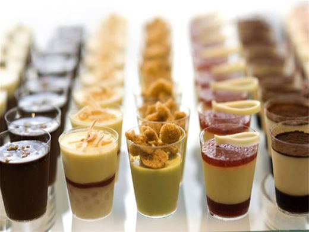
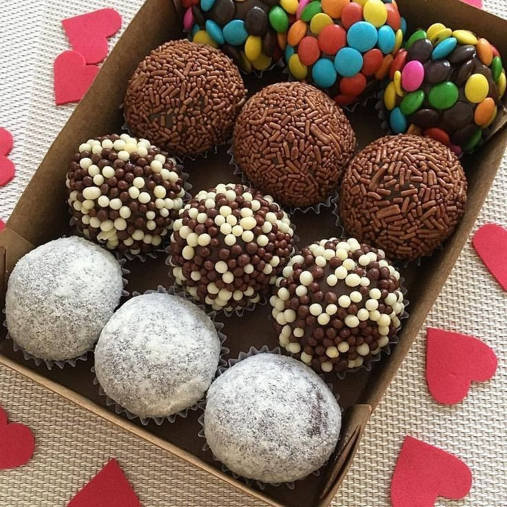
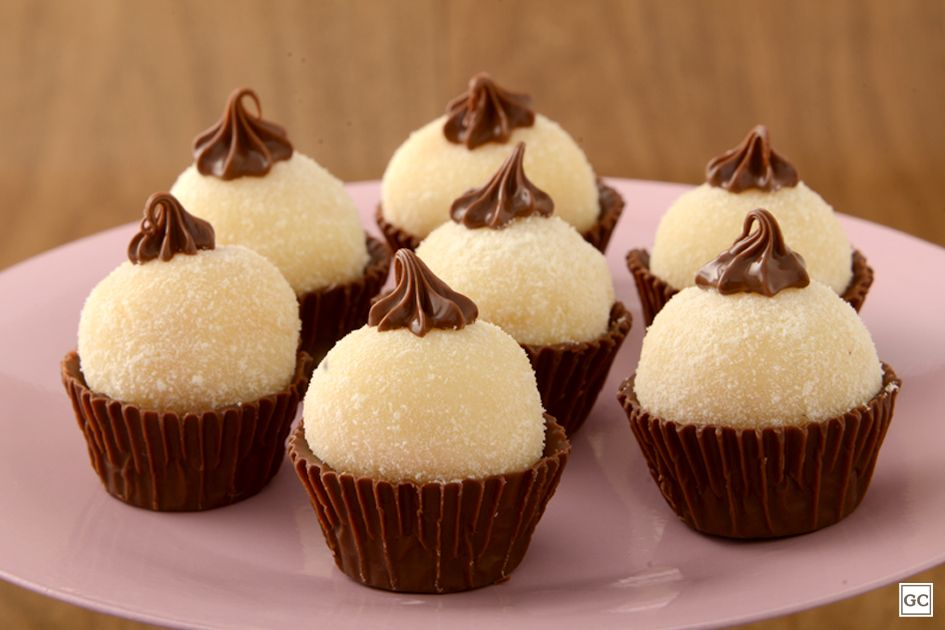

Receita Simples de Doces
Aprenda agora as melhores receitas de guloseimas caseiras que ninguém nunca lhe ensinou antes!!



Ingredientes
- 1 caixa de leite condensado
- 1 colher (sopa) de margarina sem sal
- 7 colheres (sopa) de achocolatado
- chocolate granulado
Modo de Preparo
- Em uma panela funda, acrescente o leite condensado, a margarina e o achocolatado (ou 4 colheres de sopa de chocolate em pó).
- Cozinhe em fogo médio e mexa até que o brigadeiro comece a desgrudar da panela.
- Deixe esfriar e faça pequenas bolas com a mão passando a massa no chocolate granulado.